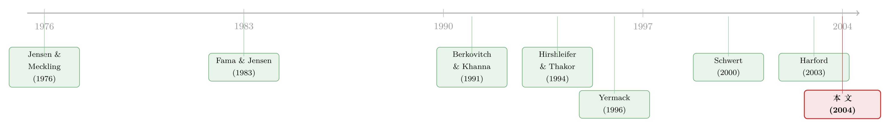

绕过董事会：当收购方读懂了「谁说了算」
本文读的是 Bange & Mazzeo (2004, Review of Financial Studies)：收购方在出价之前，会先「读」一遍目标公司的董事会——当一个人同时坐在 CEO 和董事长两把椅子上时，收购方更倾向于绕开董事会、直接向股东开价（绕过型出价）；而这种绕过型出价反而更容易成功、给目标股东带来更高的收益。换句话说，董事会的结构，悄悄决定了这场收购会以什么「形状」开场。
1 一个被忽略的问题：收购的「形状」从哪来
先抛一个你大概从没认真想过的问题。
一家公司要被收购，通常有两条路。第一条，收购方先找上目标公司的董事会和管理层，关起门来谈价钱、谈条件，谈妥了再公告——这叫 协议并购 (negotiated merger)。第二条，收购方根本不跟董事会打招呼，直接绕过他们，把要约甩到目标公司的全体股东面前：我出这个价，你们卖不卖？本文把这种「外界看来管理层和董事会事先毫无防备」的非协议要约，专门起了个名字，叫 绕过型出价 (bypass offer)。
通常我们关心的是收购「成不成」、溢价「高不高」。但 Bange 和 Mazzeo 把镜头往前推了一格：在第一笔钱报出来之前，收购方是怎么决定要走哪条路的？
这其实是个很自然、却长期被绕开的问题。Schwert (2000) 曾经试图把「敌意」收购和「善意」收购区分开，结果发现两者在会计和股价表现上并没有什么经济意义上的差别，于是他下了个略带无奈的结论：敌意与否，「很大程度上只是谈判策略的反映」。可问题是——谈判策略本身又是被什么决定的？Schwert 没有往下追。
本文的答案干脆利落：去看目标公司的董事会。
注意作者反复强调的一点：他们关心的是「协议 vs. 绕过」这条轴，而不是「善意 vs. 敌意」那条轴。「协议」不等于「友好」，它只意味着是私下谈成的；而绕过型出价里固然有很多遭到抵抗的案例，但绕过本身只是说「这笔要约没有事先和董事会谈过」。这个区分，是全文逻辑能站住的地基。
2 为什么董事会是关键：一条代理链
要理解收购方为什么要「读董事会」，得先把代理问题这条链捋顺。
故事的源头是 Jensen 和 Meckling (1976)：所有权和控制权一旦分离，管理层的利益就未必和股东一致。而收购，恰恰是这种利益分歧被放到最大的一刻。文献早就发现，目标股东在收购公告时往往有巨大的财富增益（Andrade, Mitchell, and Stafford, 2001），而要约一旦失败，股价就回吐（Ruback, 1988）。可对管理层来说账完全不一样：收购成功，他们大概率丢掉薪酬、津贴和那些控制权带来的隐性好处。于是，股东想卖，管理层想守。
这时候，董事会本该登场。按 Fama (1980) 和 Fama 与 Jensen (1983) 的经典论证，独立外部董事如果真的在履行监督职责，那么由外部人主导的董事会，就更可能做出符合「股东财富最大化」的决策。
接着，一个自然的问题是：怎么衡量一个董事会到底站在谁那边？ 本文沿用了实证文献里的三把尺子：
- 独立性（Independent）——当独立外部董事占据董事会半数以上席位时记为 1。独立外部董事被定义为「与公司没有任何雇佣、业务或咨询关系」的非雇员董事。
- 规模（Board Size）——董事人数。Lipton 和 Lorsch (1992) 提出、Jensen (1993) 背书、Yermack (1996) 用证据坐实的一个观点是：小董事会更有效。董事会一大，沟通和决策成本上升，反而沦为「橡皮图章」，把更多自由裁量权留给了管理层。
- 领导结构（Chair/CEO）——是不是同一个人同时担任 CEO 和董事长。
但真正关键的一步，在于把这三把尺子和「出价形状」连起来。本文的核心逻辑是这样的：
如果目标董事会和管理层穿一条裤子（不独立、规模大、CEO 兼任董事长），那么走协议这条路就很可能谈崩——董事会要么开出离谱的高价，要么干脆把要约搅黄。于是，理性的收购方与其浪费时间谈判，不如一开始就绕过董事会，直接去敲股东的门。
这就是全文反复打磨的那一个核心：董事会越是「替管理层站岗」，收购方越倾向于选择绕过型出价。 后面所有的实证，都是在给这句话称重。
（关于「董事会是否真的在为股东把关」这件事，本博客还聊过一个反面案例——炒掉 CEO 的董事，事后到底是被市场奖励还是被惩罚，参见《炒掉 CEO，董事是英雄还是「帮凶」？》。）
3 识别策略：在一张横截面上读「形状」
说清楚机制，接下来就是怎么把它量出来。
本文的实证骨架并不复杂，它是一组横截面的离散选择与回归，把目标公司层面的董事会特征，去解释四个相互关联的结果：
- 出价的形式——协议 vs. 绕过（二元，用 logit/probit 类模型）；
- 初始要约溢价（Offer Premium）；
- 是否出现竞争性出价（competing bid）；
- 收购是否成功，以及目标股东的财富增益。
几个识别上的细节值得拎出来说：
溢价怎么算。 Offer Premium 定义为要约价格相对于要约前 20 个交易日股价的涨幅。约 70% 的样本是现金要约，定价直截了当；剩下 30% 涉及换股，作者用收购方股价和换股比例折算出价格。为了避免收购方股价波动「污染」结果，他们还用了前 10 天、前 15 天的价格做稳健性检验。
财富增益怎么拆。 沿用 Schwert (1996, 2000) 的做法，把整个收购溢价拆成两段：抢跑（Runup）与加价（Markup）。Runup 是首次出价前两个月（交易日 (−42, −1)）的累计市场调整超额收益——它捕捉的是「消息提前泄露」那部分；Markup 是首次出价后六个月（交易日 (0, 126)）的累计超额收益——它捕捉的是出价之后真正落袋的那部分。两者都用市场模型估计，基准是 CRSP 等权指数，估计窗口取公告前 (−750, −501) 共 250 个交易日。
交互项是点睛之笔。 本文最巧的一个设计，是同时放进 Chair/CEO（CEO 兼任董事长）和一个交互项 Indep × Chair/CEO（董事会独立 且 CEO 兼任）。背后的直觉来自 McWilliams 和 Sen (1997)、Coles 和 Hesterly (2000) 等人的观点：单看 CEO 兼任，对公司治理其实没有清晰的好坏之分（Brickley, Coles, and Jarrell, 1997 也是这个结论）——因为别的治理机制（比如独立董事会）会去对冲兼任带来的负面效应。所以正确的问法不是「兼任好不好」，而是「兼任的危害，在董事会不独立时才真正显形」。交互项就是用来把这层条件性逼出来的。
这里必须诚实地标一个识别上的硬伤，作者自己也承认了：绕过型出价的分类，是基于新闻（道琼斯新闻检索 DJNRS）里披露的「首次公开出价」。一笔被归为「绕过」的要约，可能是收购方主动选择绕开董事会，也可能是「私下谈判先崩了、于是首次公开的要约才显得没谈过」。这两种解释在数据上很难分开。因此本文的结果有两种读法：要么是「董事会特征影响收购方何时选择非协议出价」，要么是「这些特征预示了管理层很可能会抵抗收购方的初步接触」。换句话说，因果方向并没有被钉死。
4 数据：436 笔收购，165 笔绕过
样本的搭建过程本身就藏着方法论的小心思。
成功的收购好找：作者从 1991 年 5 月的 Compustat 研究状态报告里，挑出 1991 年 1 月 1 日之前有并购删除代码的公司，再用道琼斯新闻检索（DJNRS）去补全细节。失败的收购难找——它们不会在数据库里留下「被删除」的痕迹。作者的办法是用 DJNRS 的文本检索，把「merger / acquisition / bid / offer」这些名词，和「reject / cancel / terminate / withdraw」这些表示失败的动词根，做各种组合去捞，硬是把那些半路夭折的收购也捞了回来。这一步很重要：只看成功样本会带来严重的幸存者偏差。
最终样本是 436 笔在纽交所和美交所交易的拟收购，其中 165 笔是绕过型出价。值得一提的是，这 165 笔绕过型出价里，只有 1 笔发生在 1990 年，5 笔在 1989 年，而 1988 年就有 23 笔——这和 Schwert (2000) 指出的「1991 年后非协议要约显著减少」是吻合的，所以样本天然集中在 1980 年代后期那波收购浪潮。
董事会数据来自目标公司在首次收购公告前最后一份代理声明（proxy statement），财务数据来自 Compustat（用公告前最后一个财年，以避免幸存者偏差），股价数据来自 CRSP，毒丸数据则借用了 Schwert (2000) 的库。作者也坦白，由于样本依赖 Compustat 和 DJNRS，它偏向大型上市公司——读结论时这一点不能忽略。
控制变量也下了功夫：收购方的事前持股（toehold，记为 Prior，Betton and Eckbo, 2000 发现它和溢价负相关）、内部人持股（Insider Holdings）、外部董事持股（Outsider Holdings）、非关联大股东持股（Block）、毒丸等反收购措施，悉数纳入。
5 主要结果：绕过，反而是好事
现在把那个核心结论摊开。
第一，关于「形状」。 收购方确实在「读董事会」。当目标公司董事会规模更大、或者 CEO 兼任董事长时，收购方更不愿意走协议这条路，而是更倾向于直接绕过——做出绕过型出价。这与第 2 节的代理逻辑严丝合缝：大董事会和「一人独大」的领导结构，都意味着董事会更难真正制衡管理层，谈判这条路因而更可能走不通。
第二，也是最反直觉的一点——绕过反而是好消息。 当 CEO 兼任董事长时，收购成功的概率更高；并且，采用合并领导结构的目标公司，其股东的总财富增益更高。
这听起来有点拧巴：一人独大的「弱治理」公司，被收购的结果反倒对股东更好？但顺着本文的逻辑想，它其实自洽——正因为这类公司的董事会拦不住、谈不拢，收购方才会绕过它直接给股东开价，而直接面向股东的要约，把价值实现的主动权从管理层手里夺了回来，于是更容易成交、也更可能把溢价落到股东口袋里。董事会的「失效」，在收购这个特定场景里，意外地帮了股东一把。
第三，独立董事会的两副面孔。 当目标公司董事会独立时，结果反而是：目标更不容易拿到高溢价，要约也更不容易成功。这一条要小心解读。一方面，它和「独立董事提升股东价值」（Cotter, Shivdasani, and Zenner, 1997）似乎相左；另一方面，本文在概念框架里早就埋了伏笔——Kini, Kracaw, and Mian (1995) 发现成功收购往往伴随外部董事被裁撤，Harford (2003) 更直接地指出，在边际上，丢掉董事席位带来的收入损失，会把外部董事推向「抵抗收购」的方向，哪怕这笔收购符合股东利益。也就是说，独立董事并非铁板一块的「股东卫士」，他们也有自己的小算盘。这就是为什么本文对「收购成功 vs. 董事会独立性」干脆不给出明确的方向预测——理论本身就是含糊的。
（独立董事的私心如何写进收购，本博客也评过一篇专门拆解的文章，参见《权力天平倒过来那一年：股东话语权如何反手抬高了并购溢价》；而董事会的「价值」究竟该怎么量，可参见《董事会的「价值」，藏在一段慢慢平息的波动里》。）
6 文献脉络
把这条线索拉直了看，本文站在一条相当清晰的演进轨迹上。
源头是代理理论的两块基石：Jensen 和 Meckling (1976) 给出「所有权与控制权分离」的框架，Fama (1980) 与 Fama 和 Jensen (1983) 则进一步论证了董事会、尤其是外部董事，是化解这一冲突的内部机制。

到了 1990 年代，收购理论开始把「出价形式」当成内生选择来建模。Berkovitch 和 Khanna (1991) 提出，要约类型（合并 vs. 要约收购）取决于目标管理层的行为，而管理层行为又取决于他们的合约；Fishman (1988, 1989) 则从「先发制人的出价」角度，解释了高溢价和交易媒介的作用。真正把董事会塞进收购博弈的，是 Hirshleifer 和 Thakor (1994)：他们指出，收购方一旦怀疑董事会与管理层结盟，反而会被「逼」出更高的报价，因为这样的董事会会索要一个高于股东保留价的溢价，去补偿管理层的个人损失。
与此同时，董事会本身的实证文献在快速积累：Yermack (1996) 证明小董事会更有效，Cotter, Shivdasani, and Zenner (1997) 证明独立董事提升要约收购中的目标股东收益，Brickley, Coles, and Jarrell (1997) 则给「CEO 兼任」泼了盆冷水——单看兼任，与业绩没有清晰关系。Schwert (2000) 把「敌意」收购的经济实质问号化，而 Harford (2003) 揭示了外部董事抵抗收购的私利动机。
本文 (2004) 恰好坐在这两条河的交汇处：它把「收购理论里的出价形式选择」和「董事会有效性的实证度量」第一次系统地拼在了一起，告诉我们——出价的形状，是收购方读完董事会之后的产物。
7 评论与延伸（Q&A + 研究方向）
(a) 几个可能的疑问
Q：「绕过型出价」和我们常说的「敌意收购」到底是不是一回事？
不是，这是本文最容易被误读的地方。敌意/善意说的是目标管理层的态度（欢迎还是抵抗），而协议/绕过说的是要约的程序形式（是否事先私下谈过）。一笔绕过型出价里确实包含大量遭抵抗的案例，但绕过的本质只是「没谈过就公开报价」，它也可能是收购方主动选择的高效路径。作者刻意用「绕过」而非「敌意」，正是为了把程序和态度分开。
Q：为什么「弱治理」（CEO 兼任）的公司被收购，结果反而对股东更好？这不矛盾吗？
关键在于路径替代。当董事会拦不住、谈不拢时，收购方绕过它直接面向股东开价，等于把价值实现的钥匙从可能「设租」的管理层手里抢了回来。所以更高的成功率和更高的股东增益，不是「弱治理本身好」，而是「弱治理触发了一种对股东更有利的出价形式」。
Q：独立董事会让溢价更低、成功率更低，这是不是说独立董事是坏事？
不能这么跳。独立董事既可能在为股东争取更高价（导致部分要约谈不拢、显得「不成功」），也可能因为怕丢席位而抵抗本该接受的要约（Harford, 2003）。这两种力量方向相反，数据里看到的是净效应，所以本文对这一项不做单向道德判断——它恰恰说明独立性是一把双刃剑。
Q：因果关系站得住吗？会不会是「爱抵抗的管理层」同时导致了绕过和低成功率？
这正是本文最大的软肋，作者自己也承认。绕过型出价的分类基于公开新闻，无法区分「收购方主动绕过」与「私下先谈崩、首次公开要约才显得没谈过」。所以严格说，本文识别的是相关性与方向一致性，而非干净的因果。把它当成「董事会特征是收购形式的强预测变量」来读，最稳妥。
Q：样本集中在 1980 年代后期，结论还适用今天吗？
要打个折扣。165 笔绕过型出价几乎全在 1991 年之前（1988 年一年就有 23 笔），而 Schwert (2000) 指出此后非协议要约显著减少。再加上样本偏向大型上市公司、剔除了受监管行业和双层股权公司，外推到当下的中小公司或新的治理环境时需谨慎。
Q：董事会规模和领导结构会不会本身就是内生的——「容易被收购的公司」恰好倾向于大董事会？
这是一个真实的隐忧。董事会结构并非随机分配，它可能与公司质量、行业、历史治理选择相关。本文用了一组控制变量（持股结构、毒丸、公司特征）来缓解，但没有外生冲击或工具变量，所以无法完全排除「董事会结构与被收购倾向同源于某个未观测因素」的可能。
(b) 几个可能的研究问题与提案
1. 用外生的治理冲击重做识别。 【经济故事】本文的死结是董事会结构内生。如果能找到一个外生改变董事会独立性或 CEO 兼任的冲击（如 2002 年 SOX、交易所上市规则对独立董事比例的强制要求），就能把「董事会→出价形式」的因果方向钉得更牢。 【可行性】中。SOX/上市规则提供了准自然实验和断点，BoardEx、ISS 等数据库可重建董事会面板。难点在于收购形式（协议 vs. 绕过）的细颗粒分类，需要回到 SEC 文件人工或用 NLP 辅助标注。
2. 把这套逻辑搬到公司债与信用市场。 【经济故事】收购的「形状」会重新分配股东与债权人之间的风险——绕过型出价往往伴随更高杠杆和更激进的接管。一个自然的问题是：目标公司的董事会结构，是否也预测了收购公告时债券持有人的财富变动？ 弱治理公司被绕过后若成功，债权人是受益还是受损？ 【可行性】中。TRACE（2002 年后）提供债券交易数据，可算公告窗口的债券异常收益；但本文样本主要在 1990 年代之前，债券数据稀薄，需要把研究窗口整体后移到 TRACE 时代重新取样。
3. 外资持有人作为「第三种监督者」。 【经济故事】本文把监督力量归结为董事会。但外资机构持有人——尤其是积极型外资——可能在收购中扮演独立于董事会的角色：他们既可能促成绕过（直接面向股东开价时更易被外资接受），也可能抬高保留价。当目标股东里外资占比更高时，收购形式和溢价会怎么变？ 【可行性】中。Factset/13F 可识别机构与外资持股，跨国样本可用 Thomson SDC 并购库。识别上可借「指数纳入/可投资度变化」作为外资持股的外生变动来源。
4. 重新检验「绕过更成功」在当代是否仍成立。 【经济故事】1991 年后非协议要约大幅减少、毒丸与交错董事会普及，「绕过」的成本和收益都变了。本文的核心实证结论是否经得起 2000 年后样本的重做，本身就是一篇有价值的复制 + 更新研究。 【可行性】高。SDC + BoardEx + CRSP 即可，方法成熟，主要工作量在重新分类出价形式。
5. 把出价形式做成多期的「序贯博弈」而非横截面快照。 【经济故事】现实中收购方往往先试探、被拒、再公开，本文的横截面无法刻画这个动态。若能观测到「私下接触→失败→公开绕过」的完整序列，就能真正分开作者承认的那两种解释（主动绕过 vs. 谈崩后绕过）。 【可行性】低到中。需要 SEC 13D/要约文件里关于事前接触的披露，信息零散且不标准化，构建序贯样本成本很高，但一旦建成，识别价值极大。
我的判断
本文的贡献，是把一个被长期当作「黑箱」的环节——收购为什么以某种形式开场——和公司治理的实证文献接上了线。它给出的核心图景很优雅：收购方在报价前会先评估目标董事会的「成色」，董事会越像管理层的橡皮图章，收购方越倾向于绕过它直接面向股东，而这种绕过反而把更多价值还给了股东。 这个「弱治理 → 绕过 → 对股东更好」的链条，既反直觉又自洽，是文章最有嚼头的地方。
但识别上的担忧是实打实的。最大的问题是绕过型出价的分类依赖公开新闻，无法把「主动绕过」和「谈崩后绕过」分开，因果方向因此悬而未决；其次，董事会结构本身高度内生，缺乏外生冲击或工具变量；再加上样本集中在 1980 年代后期、偏向大公司，外部有效性需要打折。作者对这些都相当诚实，这是它作为一篇 RFS 文章的可贵之处——它把自己的边界讲清楚了。
如果让我接着往下看，我最想要三样东西：一个外生的治理冲击来锁死因果方向；一套序贯数据来分开那两种竞争性解释；以及一次当代样本的重做，看看在毒丸和交错董事会普及、非协议要约式微之后，「绕过更成功」这个结论是否还活着。在公司治理与并购的交叉口，这篇二十年前的文章提出的问题，至今没有被真正回答干净。
参考文献
- Andrade, G., M. Mitchell, and E. Stafford (2001). New Evidence and Perspectives on Mergers. Journal of Economic Perspectives 15, 103–120.
- Baliga, B. R., R. C. Moyer, and R. S. Rao (1996). CEO Duality, Firm Performance and Corporate Governance. Strategic Management Journal 17, 41–53.
- Bange, M. M., and M. A. Mazzeo (2004). Board Composition, Board Effectiveness, and the Observed Form of Takeover Bids. Review of Financial Studies 17(4), 1185–1215.
- Berkovitch, E., and N. Khanna (1991). A Theory of Acquisition Markets: Mergers versus Tender Offers and Golden Parachutes. Review of Financial Studies 4, 149–174.
- Betton, S., and B. E. Eckbo (2000). Toeholds, Bid Jumps, and Expected Payoffs. Review of Financial Studies 13, 841–882.
- Brickley, J., J. Coles, and G. Jarrell (1997). Leadership Structure: Separating the CEO and Chairman of the Board. Journal of Corporate Finance 3, 189–220.
- Cotter, J. F., A. Shivdasani, and M. Zenner (1997). Do Independent Directors Enhance Target Shareholder Wealth During Tender Offers? Journal of Financial Economics 43, 195–218.
- Fama, E. (1980). Agency Problems and the Theory of the Firm. Journal of Political Economy 88, 288–307.
- Fama, E., and M. Jensen (1983). Separation of Ownership and Control. Journal of Law and Economics 26, 301–325.
- Fishman, M. J. (1988). A Theory of Preemptive Takeover Bidding. Rand Journal of Economics 19, 88–101.
- Fishman, M. J. (1989). Preemptive Bidding and the Role of the Medium of Exchange. Journal of Finance 44, 41–57.
- Harford, J. (2003). Takeover Bids and Target Directors' Incentives: The Impact of a Bid on a Director's Wealth and Board Seats. Journal of Financial Economics 69, 51–83.
- Hirshleifer, D., and A. V. Thakor (1994). Managerial Performance, Boards of Directors and Takeover Bidding. Journal of Corporate Finance 1, 63–90.
- Jensen, M. (1993). The Modern Industrial Revolution, Exit and the Failure of Internal Control Systems. Journal of Finance 48, 831–880.
- Jensen, M., and W. Meckling (1976). Theory of the Firm: Managerial Behavior, Agency Costs, and Ownership Structure. Journal of Financial Economics 3, 305–360.
- Kini, O., W. Kracaw, and S. Mian (1995). Corporate Takeovers, Firm Performance and Board Composition. Journal of Corporate Finance 1, 383–412.
- Lipton, M., and J. W. Lorsch (1992). A Modest Proposal for Improved Corporate Governance. Business Lawyer 48, 59–77.
- Ruback, R. S. (1988). Do Target Shareholders Lose in Unsuccessful Control Contests? In A. J. Auerbach (ed.), Corporate Takeovers: Causes and Consequences, University of Chicago Press.
- Schwert, G. W. (1996). Markup Pricing in Mergers and Acquisitions. Journal of Financial Economics 41, 153–192.
- Schwert, G. W. (2000). Hostility in Takeovers: In the Eyes of the Beholder? Journal of Finance 55, 2599–2640.
- Yermack, D. (1996). Higher Market Valuation of Companies with a Small Board of Directors. Journal of Financial Economics 40, 185–211.